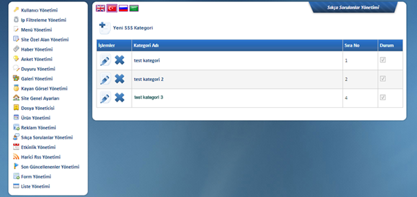
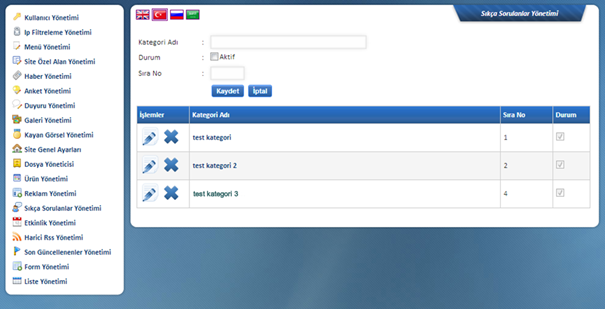
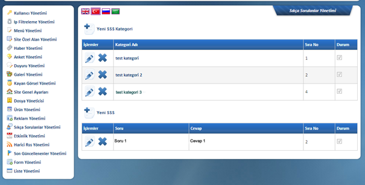
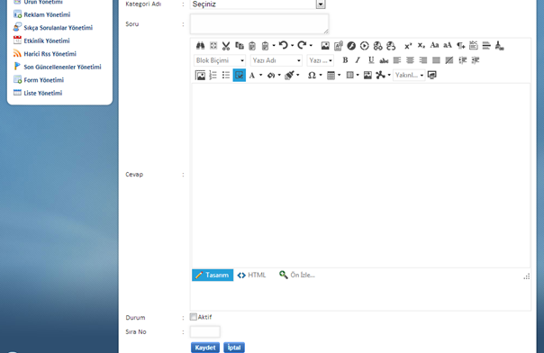

Bu alanda yayýnlamak istediðiniz sorularý kategorize edebilir, böylece ziyaretçiler tarafýndan eriþimini, içerik yöneticileri tarafýndan yönetimini kolaylaþtýrabilirsiniz.

Yeni SSS Kategori Butonuna Basdýktan Sonra

Daha önce tanýmladýðýnýz kategoriler altýna istediðiniz
miktarda soru ve cevabýný kaydedebilirsiniz.
Kategori ismi týklandýðýnda kategorilerin altýna, soru ve cevaplarýný
ekleyebileceðiniz alan açýlmaktadýr. Aþaðýda görüldüðü üzere Test Kategori
týklanmýþ olup hemen altýna Yeni SSS kýsmý açýlmýþtýr.

Yeni SSS Butonuna Týkladýktan Sonra

Kategori Adý: Sorunun hangi
kategoride olacaðýný ifade eder. Kategoriler daha önce oluþturulan kategoriler
arasýndan seçilebilmektedir.
Soru: Bu kýsýma cevabýný vereceðiniz sorunuzu yazmalýsýnýz. Çok uzun
olmamasý önerilir.
Cevap: Yazdýðýnýz sorunun cevabýnýn oluþturulduðu kýsýmdýr.
Durum: Aktif seçeneðinin iþaretlenmesiyle sitede sorunun yayýnda olacaðý iþaretlenmemesi durumunda ise sitede gösterilmemekte fakat yönetim panelinde bulundurulmasý saðlanmaktadýr.
Sýra No: Sorularýn sýrasýnýn belirlendiði alandýr. Sayý rakamla yazýlmalýdýr.